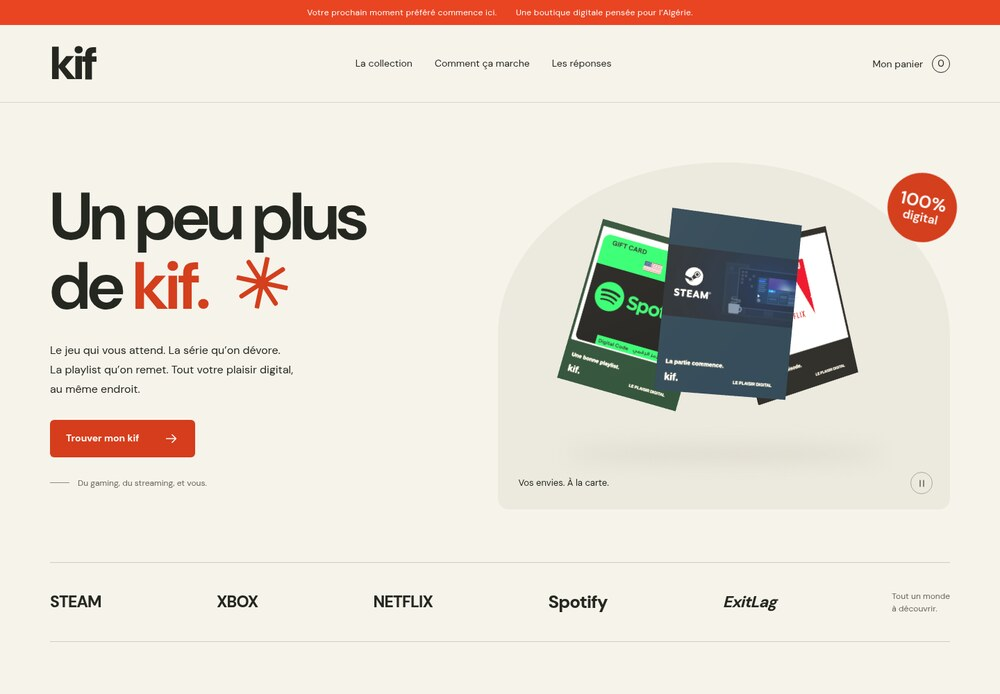
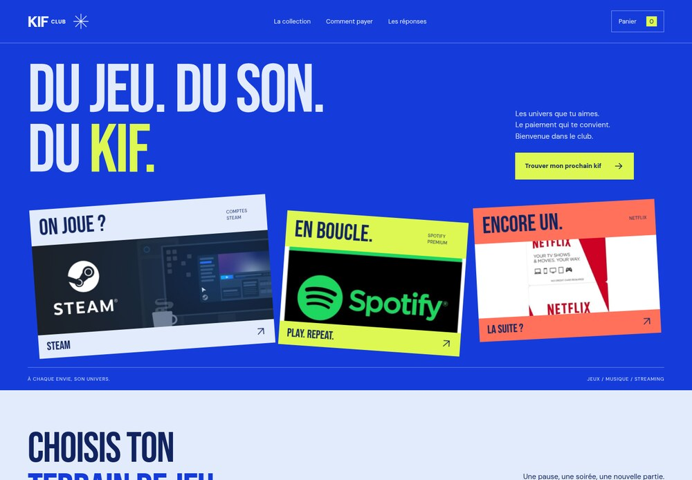
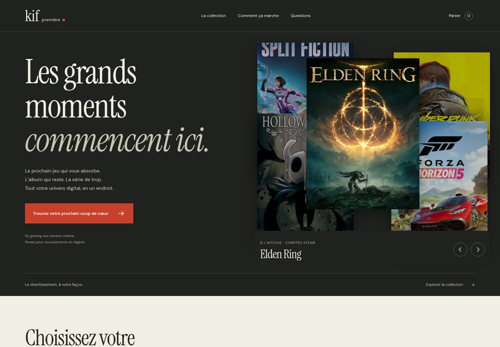
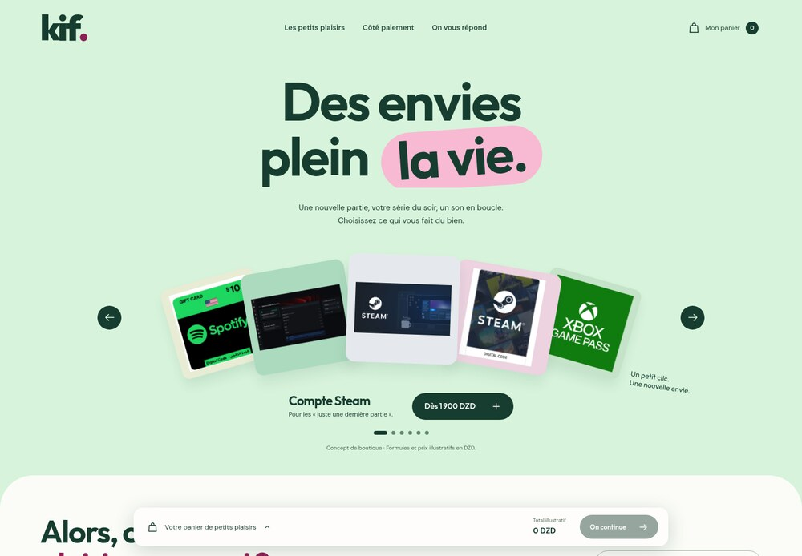
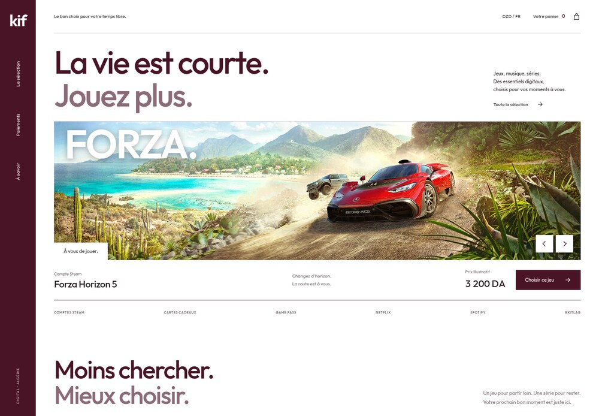
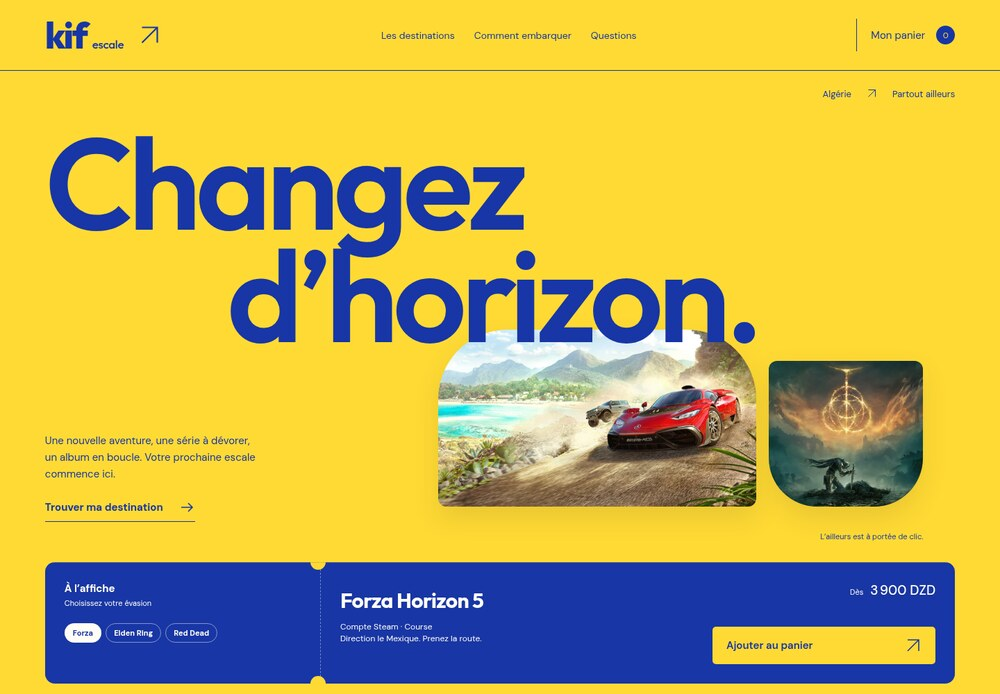
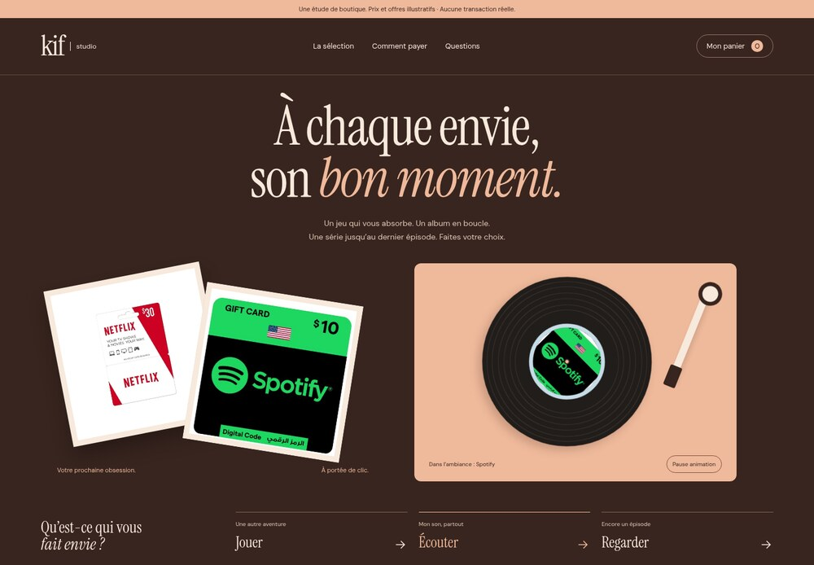
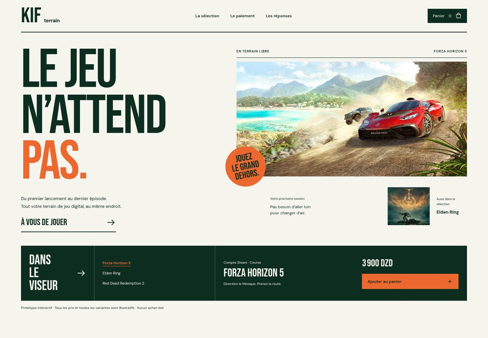
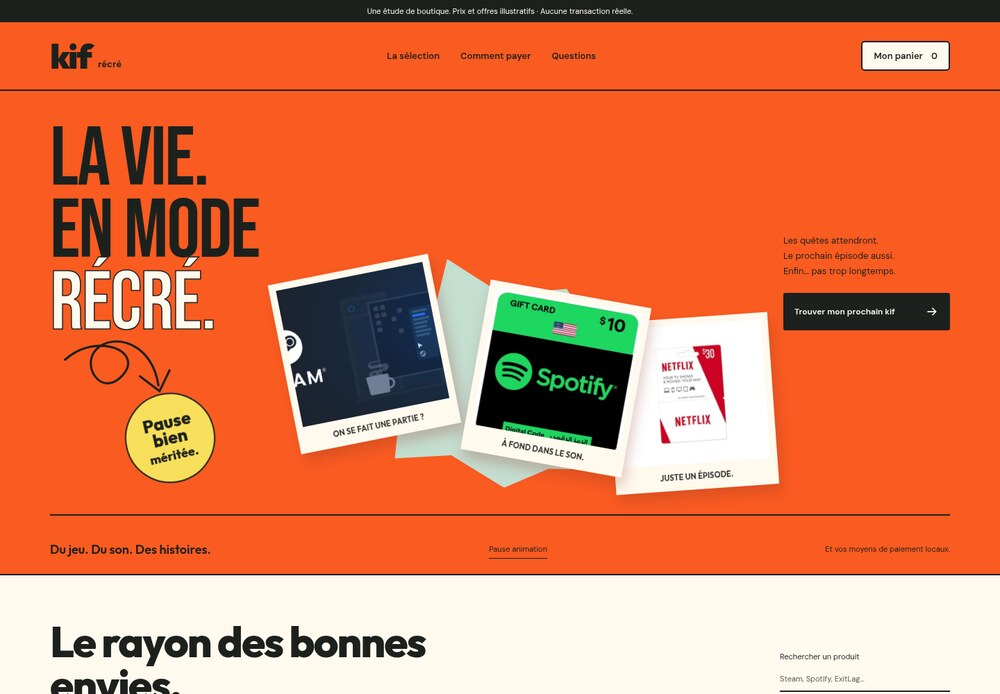
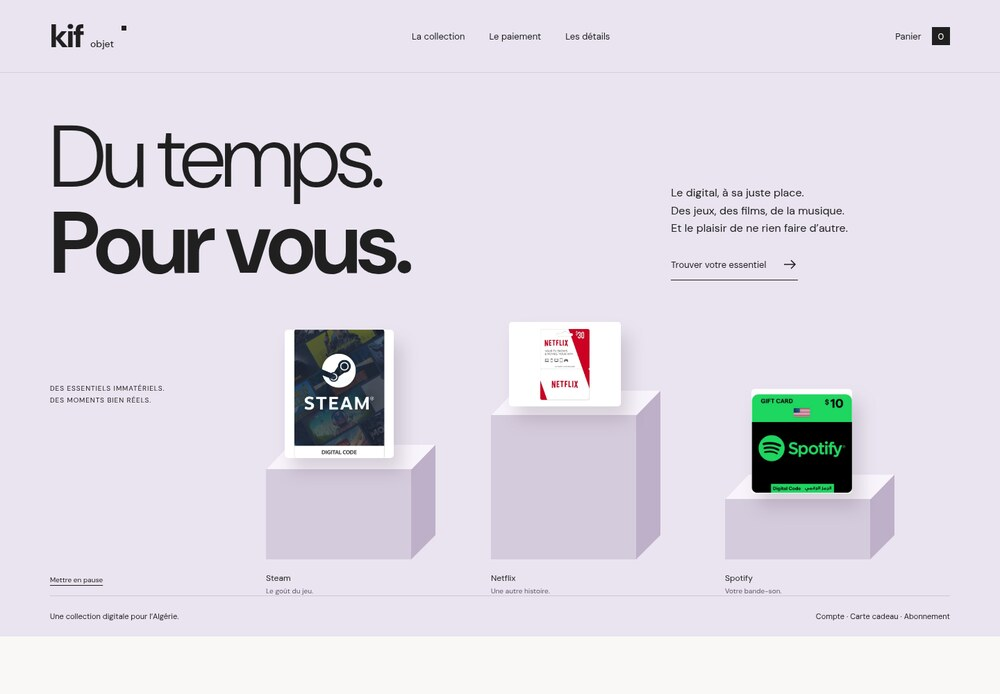

Boutique
01Chaleureux et tactile. Une vitrine de cartes en 3D, une collection claire, le plaisir de choisir.
Explorer BoutiqueExplorez les dix boutiques. Essayez la collection, le panier et le parcours de paiement pour choisir celle qui vous ressemble.

Chaleureux et tactile. Une vitrine de cartes en 3D, une collection claire, le plaisir de choisir.
Explorer Boutique
Franc et expressif. Des affiches animées, du cobalt, du caractère. Le digital côté culture.
Explorer Club
Immersif et éditorial. Un mur de jeux, une ambiance cinéma, votre prochaine grande histoire.
Explorer Première
Joyeux et ludique. Un deck de produits à explorer, des formes généreuses et une sélection à composer.
Explorer Pop
Précis et affirmé. Une navigation verticale, de grandes images et un catalogue qui se déplie.
Explorer Sélection
Le digital prend une autre direction. Des billets à choisir, du jaune solaire et une boutique pensée comme un comptoir.
Explorer Escale
Votre temps libre a sa bande-son. Une platine animée, des pochettes à explorer et un univers chocolat et pêche.
Explorer Studio
L’énergie des grands jours. Une direction sportive et éditoriale, des images larges et un choix direct.
Explorer Terrain
Le plaisir en grand. Des collages expressifs, du orange et une boutique qui joue avec les formats.
Explorer Récré
Le digital comme une collection. Des objets à découvrir, de l’espace et une galerie aux lignes précises.
Explorer Objet